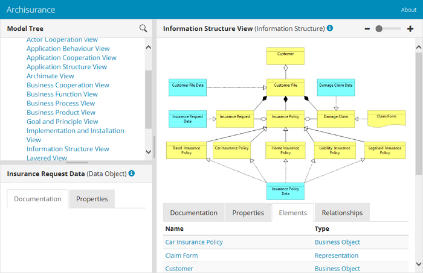

Функция предварительного просмотра HTML-отчета позволяет просмотреть сгенерированный HTML-отчет по выбранной модели на вкладке самого ArchiMate. Возможность сохранения HTML-отчета доступна в меню «Файл» -> «Отчет». Для получения дополнительной информации см. раздел «HTML-отчеты». HTML Reports

Предварительный просмотр HTML-отчета
Функция предварительного просмотра HTML-отчета позволяет просмотреть сгенерированный HTML-отчет во вкладке непосредственно в ArchiMate.